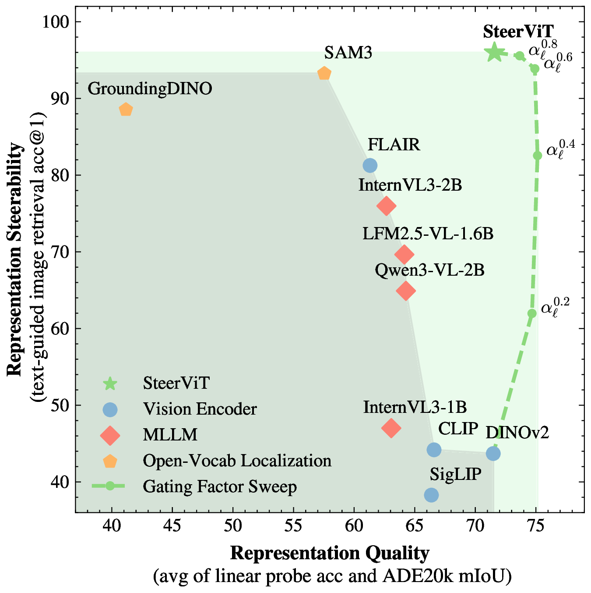
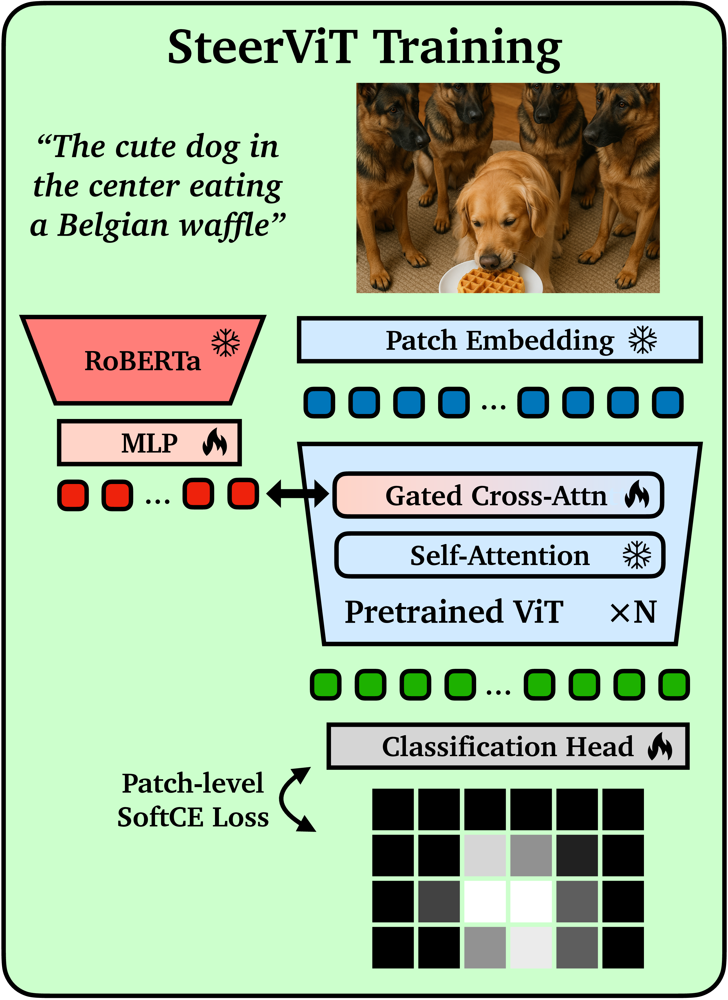
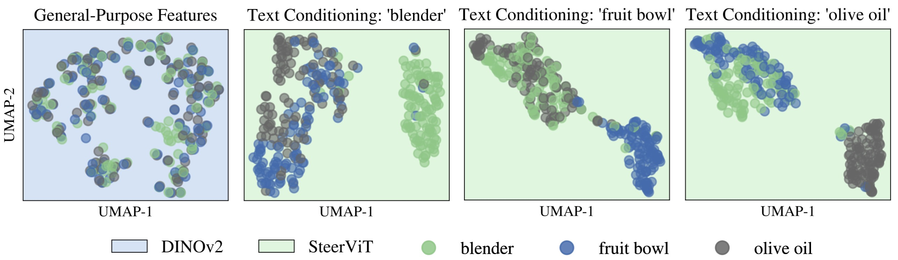
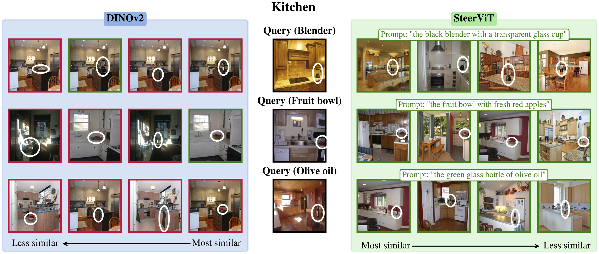
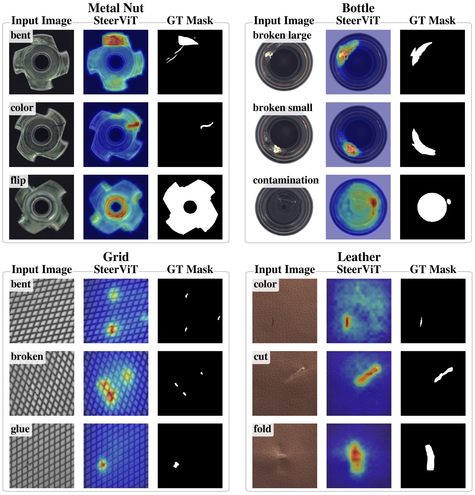

We introduce Steerable Visual Representations, a new class of visual representations whose global and local features can be steered with natural language. Our SteerViT method turns any pretrained Vision Transformer into a query-aware visual encoder by injecting text directly into the layers of the visual encoder via lightweight gated cross-attention. The result is a vision-centric multimodal representation that can focus on the object, attribute, or abstraction you care about, while remaining useful for transfer.
Given an image and a text query, SteerViT produces prompt-conditioned local and global visual features by steering the vision encoder itself, rather than only fusing text after visual encoding.
Across conditional retrieval, targeted attention, personalized object discrimination, and industrial anomaly segmentation, SteerViT shows that language can guide what vision encodes without giving up the strengths of pretrained visual representations.
Pretrained ViTs such as DINOv2 provide strong generic visual features, but they are typically query-agnostic: without any extra input, they tend to encode the most prominent object or scene in the image. This is useful for general-purpose vision, but limiting for tasks that require focusing on a less salient object, a specific attribute, or a different level of semantic abstraction.
Existing multimodal systems do not fully solve this problem. Cross-modal encoders usually fuse text after visual encoding, so the visual backbone itself is still not steerable. MLLMs are more flexible, but their representations are often language-centric and come with much higher computational cost.
SteerViT takes a different route: instead of conditioning language on vision, it conditions vision on language. The goal is not just to produce the right answer for one downstream task, but to create a new class of prompt-aware visual representations that remain broadly useful.

Language changes both where the model attends and what the global representation encodes, including the semantic granularity and grouping principle of the learned features.
SteerViT turns any pretrained ViT into a query-aware encoder through lightweight gated cross-attention, adding only 20M multimodal parameters.
The resulting representations remain broadly useful, supporting retrieval, targeted attention, semantic control, and zero-shot transfer to new downstream domains.
1. Start from any pretrained ViT.
All original parameters remain frozen, preserving the structure and strengths of the pretrained visual backbone.
2. Inject language into visual processing.
SteerViT interleaves lightweight cross-attention blocks within the ViT to enable visual tokens to attend to text tokens.
A zero-initialized tanh gate ensures the model starts exactly as the original frozen ViT and only gradually incorporates language during training.
3. Training with referential grounding.
We use a patch-wise referential segmentation objective that requires the model to indicate which regions correspond to the prompt.
This encourages the model to learn how to steer the visual representation toward the queried concept, rather than just adding extra information at the output level.

To test whether global image features can really be redirected by text, we introduce CORE, a conditional retrieval benchmark built around small, scene-dependent objects placed into cluttered scenes.
SteerViT reaches 95.9% acc@1 on CORE, compared to 43.5% for DINOv2. This shows that text conditioning can shift the representation from the dominant scene concept (e.g., “kitchen”) toward the actual object of interest (e.g., “fruit bowl”).


Steerability is not only visible in nearest-neighbor retrieval. It also changes how the model aggregates information.
On the MOSAIC benchmark, where four images are stitched into a single composite image, SteerViT redirects the frozen [CLS] attention toward prompt-relevant regions. DINOv2 still focuses on the most salient objects, while SteerViT can attend to small or non-dominant targets.
Quantitatively, this raises attention localization from 14.3 to 42.5 PR-AUC.

SteerViT does not just change what the model attends to. It also changes how the visual embedding space is organized.
Broad prompts such as "animal" produce coarse semantic groupings, while more specific prompts such as "bird" sharpen the separation of individual concepts.
Text can even steer the space by compositional attributes rather than category. For example, prompting with "eye" groups together classes that share this property, even across semantic boundaries.
The value of steerable visual representations is not only that they are controllable, but that they remain useful far beyond the training setup.
SteerViT transfers zero-shot to industrial anomaly segmentation, despite never being trained on those target domains. With prompts such as “the anomaly in the object”, we can repurpose the learned linear segmentation head to localize subtle defects.
On MVTec AD, SteerViT reaches 79.8 PRO, matching or approaching dedicated zero-shot anomaly segmentation methods.

The tanh-gated cross-attention layers do more than stabilize training. They also provide a useful post-hoc control knob at inference time.
By scaling the learned gates with a continous steering factor, SteerViT can interpolate between the original frozen ViT behavior and the fully text-conditioned representation.
In practice, this yields a smooth Pareto frontier and allows one model to serve different operating regimes.
@article{ruthardt2026steervit,
title={Steerable Visual Representations},
author={Jona Ruthardt and Manu Gaur and Deva Ramanan and Makarand Tapaswi and Yuki M. Asano},
journal={Arxiv},
year={2026}
}